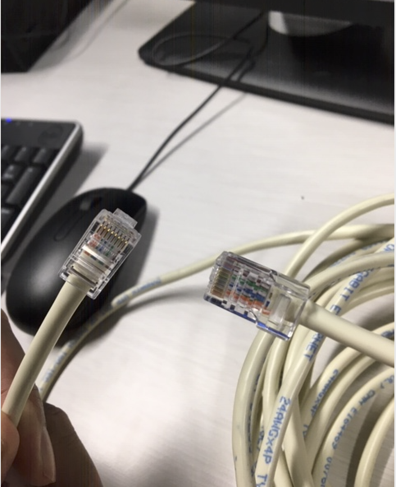
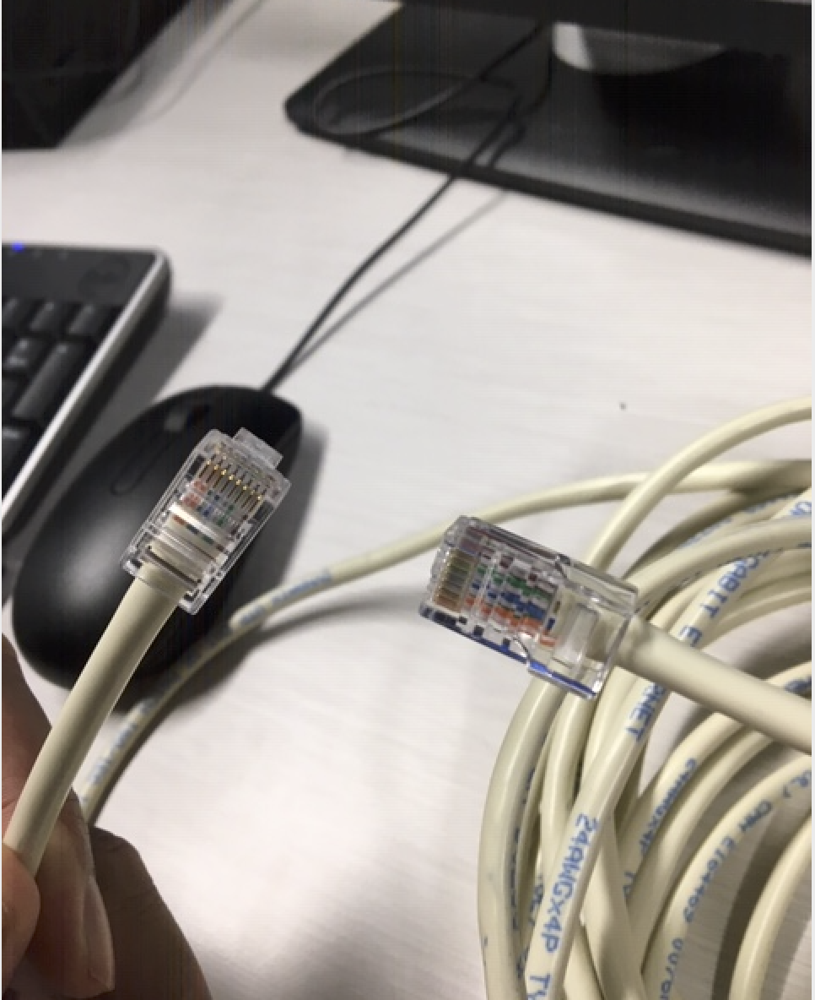

Perofessonal achievements
Week1
In week one, I was confused for choosing my project but after doing some research and getting information from the lectures, I decided to choose DevOps for my project. Me and my teammate "Sabi" are working in this project and Grasyon is our Team leader. Grason Advised to do a some research about Docker and Kubernetes and also he sent us some Tutorial links, which was very helpful for me and allowed me to be more familiar with it.
In the first week when we started working, our computer didn't have access to internet since our computer wasn't close to the ports. However, we resolved this problem by making an ethernet cable. Using the information I had from previous papers as well as doing online resarch, we where able to make an ethernet cable to connect our computer to the ports further away from us successfully. Also we made another ethernet cable for Issa because he had a similar problem.
This week I had a discussion with my teammate Sabi about the project and what steps we have to take to finish our project successfully and how we can work as a team to get efficient result.
 

Conclusion
In Conclusion, after doing more resarching I chose my project and I had to do some hardware work which was creating the RJ45 cable to connecting a computer to the internet
Week2
In week two, I set up my portfolio. With Graysons advice, I decided to use my previous semesters portfolio which was Software Engineering, rather than creating a new portfolio. However, I had to change some Css properties and make it better than my previous class. After changing my portfolio I shared it on github with grayson , and started to write my week one's notes.
The Next thing I did this week, was doing some research. I wasn't too familiar with docker, however I got to learn a lot more about it by doing some research in different websites and youtube and checking the website which Grayson introduced to me. This way, I got to be a bit more confident with docker. I put some of the links which I followed below.
Learn to build and deploy your distributed applications easily to the cloud with Docker
Docker For Windows | Setting Up Docker On Windows | Docker Tutorial For Beginners | Edureka
Docker Tutorial - Docker Container Tutorial for Beginners
Conclusion
I setup my portfolio and wrote first week's document and shared it with Grayson. Also I did some research about Ducker